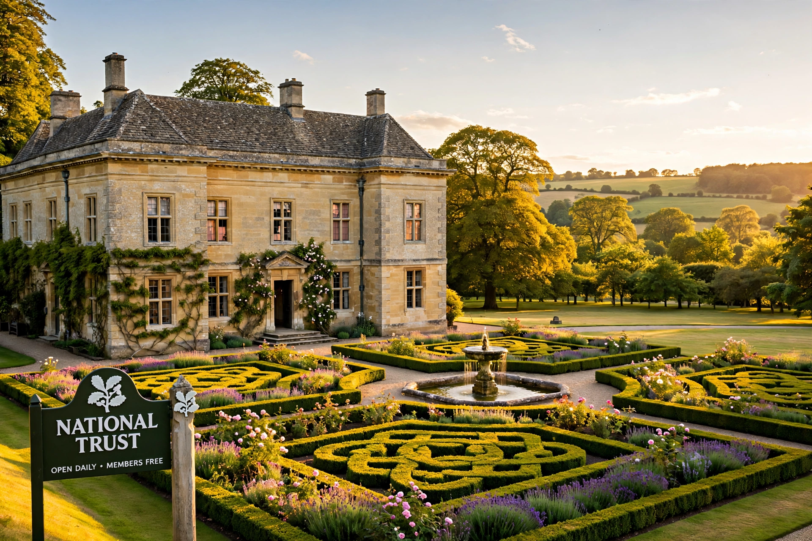

The National Trust (formally the National Trust for Places of Historic Interest or Natural Beauty) is a heritage and nature conservation charity and membership organisation in England, Wales and Northern Ireland. Founded in 1895, it is one of the largest landowners in the United Kingdom, protecting historic houses, gardens, countryside and coastline for the nation. Scotland has its own separate National Trust for Scotland.

One of the hundreds of country houses cared for by the Trust.
| National Trust | |
| Founded | 12 January 1895 |
|---|---|
| Founders | Octavia Hill, Robert Hunter, Hardwicke Rawnsley |
| Type | Conservation charity |
| Area served | England, Wales, Northern Ireland |
| Members | Around 5 million |
| Holdings | Over 250,000 hectares of land; 780 miles of coastline; 500+ historic properties |
The Trust was founded by social reformer Octavia Hill, solicitor Robert Hunter and clergyman Hardwicke Rawnsley, inspired in part by concern over industrialisation and by earlier preservation efforts. The National Trust Act 1907 gave the Trust the unique power to declare its land inalienable, so it cannot be sold or mortgaged against the Trust's wishes. Growth accelerated after the Second World War as great country houses, unable to be maintained by their owners, passed to the Trust, often with endowments brokered through the Treasury under the Country Houses Scheme.
The Trust cares for more than 500 historic houses, castles, gardens and parks, including Waddesdon Manor, Petworth House and the Giant's Causeway in County Antrim. It protects over 780 miles of coastline - a campaign boosted by the 1965 Neptune Coastline Campaign - and vast areas of the Lake District, where it is the largest landowner. Beatrix Potter, a major benefactor, left it some 4,000 acres of Lakeland farmland.
The Trust is an independent charity governed by a board of trustees and a council partly elected by its roughly five million members, making it one of Europe's largest membership organisations. Its motto is derived from its founding purpose: to hold places "for ever, for everyone".
See also: Historic England, National Trust for Scotland.